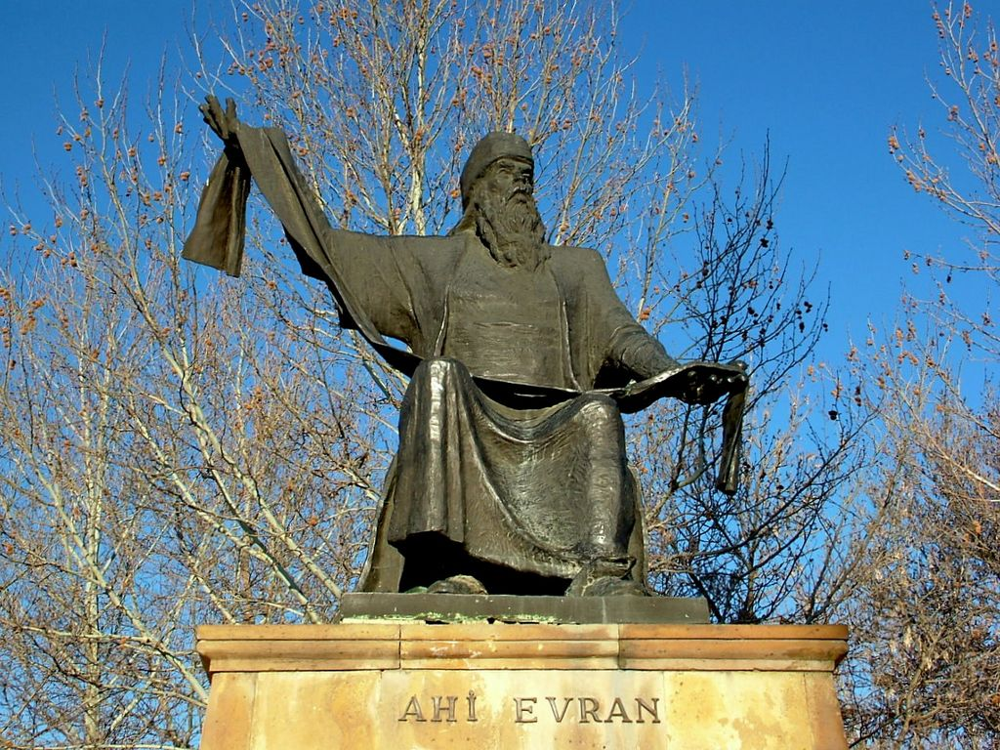
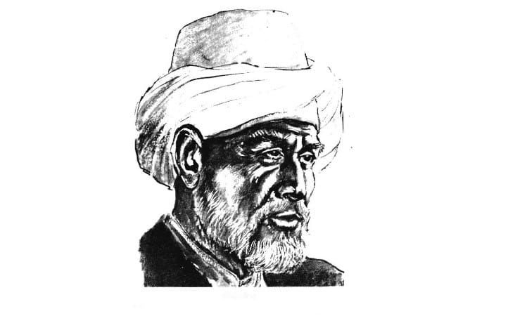
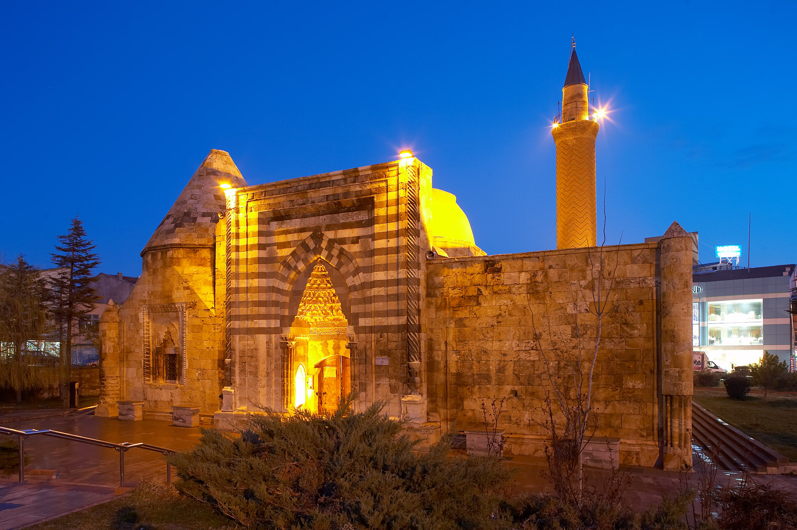
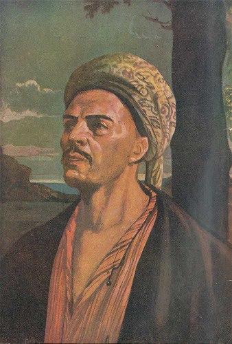
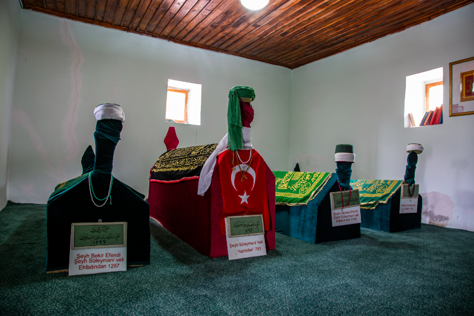

 Ahi Evran-ı Veli Esnaf ahlakı ve yardımlaşmanın öncüsü. "Eline, beline, diline sahip ol" felsefesinin mimarı.
Neşet Ertaş Bozkırın Tezenesi, insanlık ve tevazu abidesi. UNESCO tarafından yaşayan insan hazinesi seçilen büyük ozanımız.
 Aşık Paşa Türk dilinin Anadolu'daki savunucusu. "Garibname" adlı eseriyle Türkçeye olan vefasını kanıtlayan alim.
 Cacabey Dünyanın ilk gözlemevlerinden birini Kırşehir'de kurarak astronomi biliminin temellerini atan bilim insanı.
 Yunus Emre Gönül sultanı, sevgi ve hoşgörünün sesi. Makamı Kırşehir Ulupınar'da bulunan dünya şairi.
 Ş. Süleyman Türkmani Mevlana Celaleddin-i Rumi'nin talebesi, Mevlevi yolunun Kırşehir'deki temsilcisi ve manevi ışığıdır.